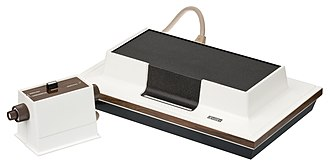
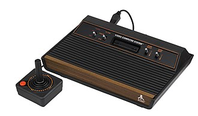
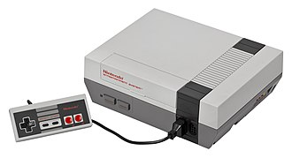

A videójáték-konzol (más néven játékkonzol, konzol vagy játékgép) interaktív, elsősorban videójátékok használatára szánt elektromos berendezés, mely elektromos jelet szolgáltat a videójátékok kijelzésére. Kijelzőként leggyakrabban a televízió képernyője vagy monitor szolgál.
A videójáték-konzolok típusai az alábbiakː
Habár az első videójátékok már az 1950-es években megjelentek, ezek vektoros, nem pedig analóg kijelzőket használtak. Az első TV-hez csatlakoztatható játékkonzolt a Magnavox adta ki, 1972-ben – ez volt a Magnavox Odyssey, Ralph H. Baer találmánya. Az Odyssey csak mérsékelt sikereket ért el, a széles tömegek az Atari Pong játékának megjelenése után kezdtek el érdeklődni a feltörekvő iparág iránt. 1975 őszére a Magnavox, látva a Pong sikerét, beszüntette az Odyssey fejlesztését, és egy leegyszerűsített terméket, az Odyssey 100-ot dobta piacra. Ez a konzol két játékot kínált, a Pongot és egy hoki játékot. Egy másik, "fejlettebb" konzol, az Odyssey 200 is piacra került, ez már megjelenítette a játék állását is, négyszemélyes játékot és egy harmadik játékot (Smash) is kínált. Az Atari Pong konzoljának megjelenésével ugrásszerűen nőtt a felhasználók száma, a piac pedig hamarosan megtelt pong és ponghoz hasonló játékokat kínáló konzolokkal.
1976-ban megjelent a Fairchild Video Entertainment System (VES). A VES úttörő konzol volt a maga idejében. Habár már korábban is léteztek konzolok, amelyek cartridge-et használtak, de ezek vagy üresek voltak és csak átkapcsoltak a konzolba beépített játékok között, vagy maga a konzol volt üres, és a cartridge-ek tartalmazták a játék teljes kódját. A VES ezzel szemben programozható mikroprocesszorral rendelkezett, így a cartridge-ek egy egyszerű ROM-chipet tartalmaztak, melyeken a mikroprocesszor utasításait rögzítették. Az RCA és az Atari nem sokkal később kiadta a saját cartridge-ra épülő konzoljait.
1983-ban a Nintendo Japánban piacra dobta a Family Computer-t (Famicom). A ColecoVisionhez hasonlóan a Famicom támogatta a nagyfelbontású sprite-okat és a hátteret, de több színnel. Ez lehetővé tette, hogy a Famicom-játékok hosszabbak és jobb grafikájúak legyenek. A Nintendo a Famicom konzolt 1985-be mutatta be az Egyesült Államokban, Nintendo Entertainment System (NES) néven. Az Egyesült Államokban ekkorra a videójátékokat már letűnt hóbortnak tartották. Hogy saját terméküket megkülönböztessék a korábbi konzoloktól, a Nintendo egy elöl behelyezendő cartridge-ot használt (hasonlót, mint a VCR). A NES csomagolásához tartozott a Super Mario Bros. játék és a Zapper játékkonzol-pisztoly. Az R.O.B. kiegészítőt különálló termékként, és a NESszel közösen is meg lehetett vásárolni.
Akárcsak a Space Invaders az Atari 2600 esetében, a NESnél a Super Mario Bros. játék hozta meg a nagy áttörést. A Nintendo sikere felélesztette a videójáték-ipart, az elkövetkező években pedig új konzolok jelentek meg a NES konkurenciájaként.
A Sega Master System-e eredetileg azért készült, hogy legyőzze a NESt, de az Egyesült Államokban sosem ért el nagy részesedést a piacon, sokkal jobban teljesített azonban a PAL-területeken, elsősorban Brazíliában.
A Sega jelentős piaci részesedésre a Mega Drive-val tett szert, amely 1988. október 29-én jelent meg Japánban, az Egyesült Államokban 1989 augusztusában (Sega Genesis névvel), Európában pedig 1990-ben, két évvel a Super Nintendo Entertainment System (SNES) megjelenése előtt. Akárcsak az Atari 2600-nak és a NES-nek is megvolt a maga sikeres játéka, a Sega konzolaira is megjelent a Sonic the Hedgehog, amely a Super Mario Bros. nagy vetélytársa lett.
A Sega kiadta a Mega Drive-hoz a Sega Mega-CD-t (Észak-Amerikában Sega CD-ként ismert), amely lehetővé tette a nagyobb memóriaigényű játékok tárolását. Később megjelent a Sega 32X is, amely biztosította az ötödik generációra jellemző sokszög-feldolgozást. Ennek ellenére a bővítmény kereskedelmi kudarc volt, mivel nem állt rendelkezésre kellő szoftver-támogatás.
A negyedik generáció további konzoljai a NEC TurboGrafx-16-je és az SNK Playmore Neo Geo-ja.